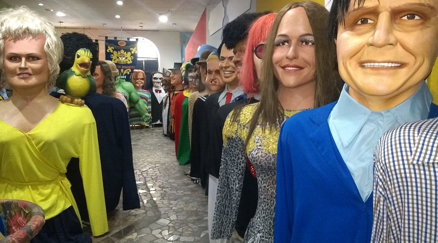
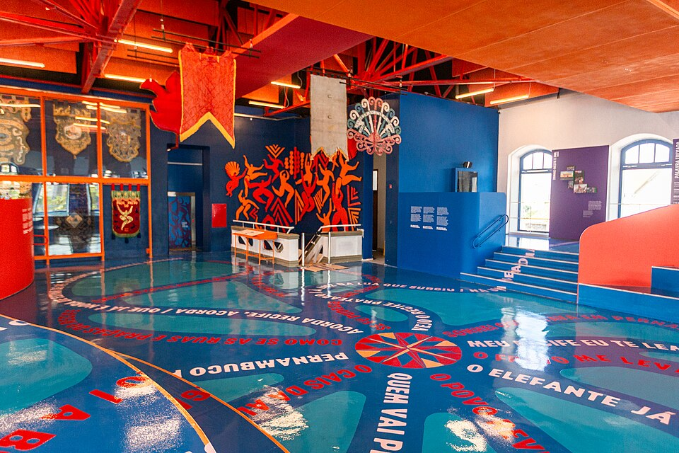
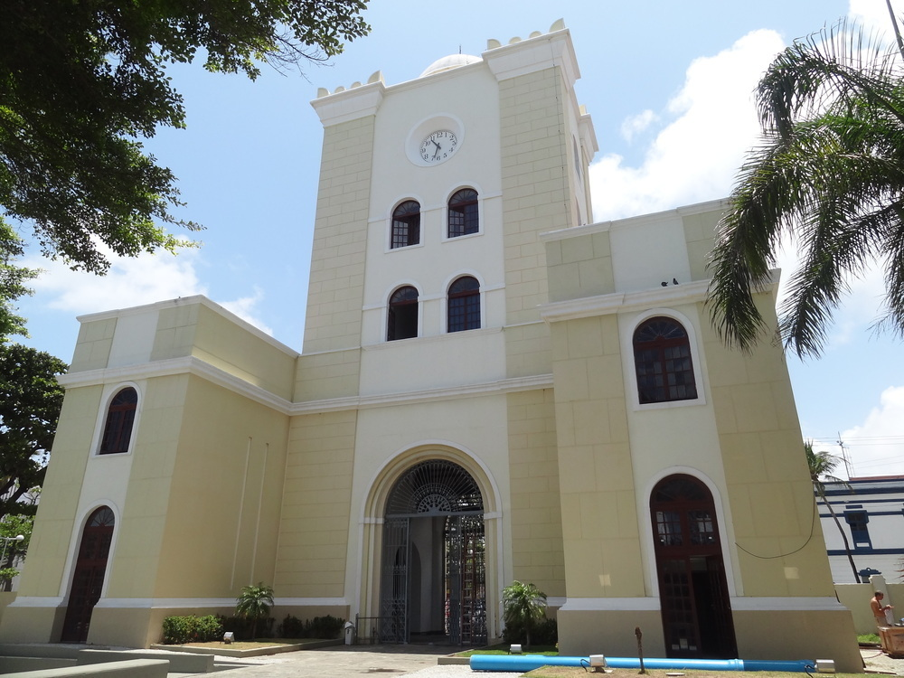
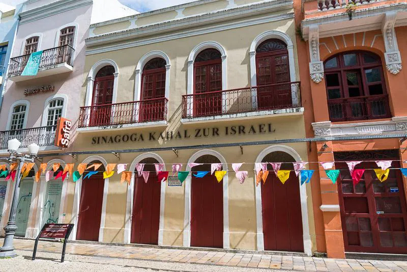

Descubra os Principais Monumentos e Locais Históricos
Marco Zero: O Início de Tudo

Considerado o coração do Recife, o Marco Zero marca o ponto inicial da contagem das distâncias rodoviárias de Pernambuco. Cercado por prédios históricos e pela famosa Rosa dos Ventos de Cícero Dias, é um dos cartões-postais mais visitados da cidade.
Rua do Bom Jesus: A Mais Bela do Mundo

Eleita diversas vezes como uma das ruas mais bonitas do mundo, a Rua do Bom Jesus é famosa por seus prédios coloridos, atmosfera histórica e por abrigar a primeira sinagoga das Américas.
Embaixada dos Bonecos Gigantes: Gigantes da Cultura
Lar dos tradicionais bonecos que desfilam no carnaval, a embaixada reúne peças gigantes de artistas, figuras históricas e personagens populares. Uma experiência divertida e única.
Paço do Frevo: O Ritmo que Contagia
Museu dedicado à preservação, promoção e pesquisa do frevo, patrimônio imaterial da humanidade. O espaço oferece exposições, aulas, apresentações e uma imersão completa no ritmo que define Recife.
Torre Malakoff: Arte e Ciência
Construída no século XIX, a Torre Malakoff serviu como observatório astronômico. Hoje, funciona como centro cultural, sediando exposições e eventos artísticos.
Sinagoga Kahal Zur Israel: História e Fé
Inaugurada no século XVII, a Kahal Zur Israel é reconhecida como a primeira sinagoga das Américas. Atualmente, funciona como museu e centro de memória judaica.
Informações Práticas (Fictícias)
| Local | Horário de Funcionamento | Preço de Entrada |
|---|---|---|
| Marco Zero | Aberto 24h | Gratuito |
| Rua do Bom Jesus | Aberta 24h | Gratuito |
| Embaixada dos Bonecos Gigantes | 10h – 18h | R$ 20,00 |
| Paço do Frevo | 9h – 17h | R$ 10,00 |
| Torre Malakoff | 9h – 17h | Gratuito |
| Sinagoga Kahal Zur Israel | 9h – 17h | R$ 8,00 |
🔗 Saiba mais em: pontos turísticos e história